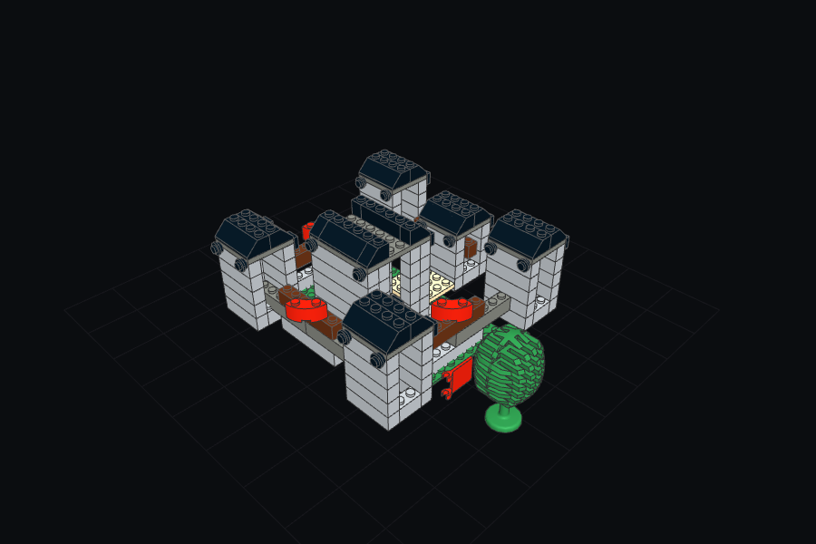
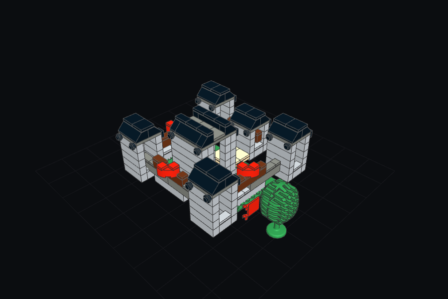

Current wager, never evidence. Files: the-field-not-the-window__2026-09-03.pdf · the-field-not-the-window__2026-09-03.tex · the-field-not-the-window__2026-09-03__SOURCE_MAP.txt
Working Paper · AI-augmented research process · Evidence, prompts, and making history preserved · 2026-09-03
Abstract. Language models that assemble LEGO models in the LDraw format fail in characteristic ways: pieces that hover, pieces that interpenetrate, pieces placed off the stud lattice. The usual remedy is to put more of the model into the context window. This paper argues that the remedy is aimed at the wrong object. LDraw records where a piece is, not what it can connect to, so a model reading LDraw must recompute connectability from coordinates before it can act; that recomputation, not token count, is the attention tax. Following the distinction between a landscape of affordances and the field of affordances that currently solicit action, the paper proposes that the representation an assembling model should see is the small, changing field of open ports of the half-built object, and that the model should answer with a relation to a port rather than a coordinate. A cheap instrument makes the field measurable: a stud faces air when the point just above it lies inside no other piece. Sixteen real kits keep between 11% and 43% of their structural studs open; of six generated builds in the same repository, 2 sit above that band and the rest inside it. A pass that closes every open stud drives 5 of 6 builds below the band and a twelve-axis critic calibrated on the kits barely registers the change, while a pass restricted to ragged surfaces moves one build from 5 wins / 7 losses to 6 wins / 6 losses. Applied to the kits themselves, the closing pass tiles over surfaces they leave open on purpose. The evidence therefore supports the field and refutes its naive reading: what must be routed to attention is solicitation, weighted by raggedness, reachability and intent, not the set of open ports. The paper closes with the seven prompt seeds this implies and with what remains unmeasured.
Keywords: LDraw, assembly, affordances, attention, language models, stigmergy, LEGO, proprioception
A castle of six thousand pieces will not fit in the head of anything that has to place the next piece. This is as true of a person with a manual as of a language model with a context window, and the two cope in different ways. The person never holds the castle; they hold the piece in hand and a few places it might go. The language model, given the castle as LDraw text, is asked to hold all of it, and it reads coordinates. Each line of an LDraw file says which part sits at which position under which rotation [1]. Nothing in the line says whether the part is seated on studs, hovering a plate above them, or passing through a wall. Those facts are recoverable from the coordinates, but only by recomputing the geometry of every neighbour. That recomputation is the tax this paper is about.
The thesis is that the tax is representational rather than quantitative, and that it is paid whenever information which could stay implicit in the object is forced through a general-purpose description before action. The fix is not a larger window and not a shorter file. It is to show the model a different object: the field of open ports of the half-built model, ranked by how much each one currently solicits a piece, and to let the model answer with a relation to one of those ports. The argument borrows its central distinction from ecological psychology, where the landscape of affordances is what an environment offers in general and the field of relevant affordances is the small subset that stands out to a skilled agent in a concrete situation [2]. The claim here is that an assembling model should be built to see the field.
The paper then does what the argument invites: it measures the field. A stud faces air when the point just above it lies inside no other piece. Counted across sixteen real kits and six generated builds in one repository, the number puts the kits in a band and the builds inside or above it, and a placement pass routed by that number changes the builds in a way a kit-calibrated critic almost cannot see. The naive version of the field, treated as a to-do list, makes the builds less like kits, not more. That result is the paper's stepping stone: the field is a field of solicitations, and solicitation has to be weighted by something the open-port count does not contain. The last section names the prompt seeds that follow and says where the evidence stops.
Three literatures meet here. The first is the ecological account of action, in which perception delivers possibilities for action rather than descriptions of the world, and skill consists in responding to the few possibilities that matter now [2]. Cisek's affordance competition hypothesis gives the account a mechanism: the brain specifies several currently possible actions in parallel and lets them compete, with attention operating as an early selector among candidate actions rather than as a better reader of the scene [3]. Kirsh adds that agents arrange space so that the geometry performs some of the reasoning [4], and Brooks that a live world can answer questions a stored description would only approximate [5]. These are arguments about biological and robotic agents. They transfer to an assembling language model because the model, too, has to choose among many possible next placements from a partial view.
The second literature is about coordination through the built object. Grassé's stigmergy, reviewed for construction by Smith and colleagues, describes builders whose next act is cued by the state of what has already been built rather than by messages [6]; Werfel, Bar-Yam and Nagpal extend the idea so that construction blocks themselves carry machine-readable state [7]; Wilsson's beavers repair where the sound of running water recruits them [8]. Control theory supplies the formal version: an expensive controller need not run on every tick if it runs whenever an error crosses a threshold [9], and an error should be weighted by how much the sensor reporting it can be trusted [10]. Ashby's ultrastable system says when a deeper adaptation should be recruited at all: when an essential variable leaves its admissible region, not when the current step is merely hard [11].
The third literature is the one the assembling model actually lives in. The LDraw file format is a recursive grammar: a type-1 line takes a reusable file, transforms it, and places an instance [1]. What it lacks is connectivity. Roland Melkert's shadow library for LDCad supplies snap metadata that the primary parts do not carry [12], and BrickNet builds from LDraw a connector graph and a build tree so that a generative model predicts relations rather than absolute poses [13]. LegoGPT shows a generator that guesses, tests physics, and rolls back [14]; CADCodeVerify closes a loop of generate, render, interrogate and correct [15]; State-CAD keeps an authoritative structured state apart from the transcript [16]. OmniCAD reports that frontier multimodal agents still fail on assemblies averaging about twelve parts [17], which is the scale at which the argument of this paper begins to matter.
3.1 LDraw knows where a piece is, not what it can connect to. The point deserves to be stated plainly because it is easy to mistake for a complaint about verbosity. An LDraw placement is complete as geometry and silent as assembly: it can describe a brick that floats, a brick inside another brick, or a brick that could never have been inserted, using exactly the syntax it uses for a seated one [1]. Community tooling knows this, which is why connection data lives in a separate shadow library [12] and why BrickNet had to reconstruct a connector graph before a model could be trained to build [13]. A language model reading raw LDraw is therefore asked to do at inference what BrickNet did at preprocessing: infer relations from positions. Every hovering brick in a generated model is that inference failing silently.
3.2 The minimal representation for the next placement is the field of open ports. If the model is not to hold the castle, what should it hold? The ecological answer is: what currently solicits action. For a stud-and-tube system this has an unusually literal form. Each piece exposes ports; a port is open when nothing occupies it; the set of open ports on the half-built model, together with the piece in hand, is the complete set of currently possible seated placements. This set is small relative to the model, it changes with every placement, and it is exactly what the human builder attends to when they look for where the next brick goes. Cisek's framing is the useful one: rather than represent the scene and then derive actions, derive the candidate actions directly from local geometry and let them compete [3]. Deictic roles then do the rest of the work: the open stud beside the last window is a better name than instance 5291 for the purposes of the next move, as Agre argued for everyday activity [18] and Pook and Ballard for teleassisted manipulation [19].
3.3 A field is not a to-do list. Here the argument has to be careful, and the evidence in the next section shows why. An open port is a possibility, not an instruction. Real models leave surfaces open on purpose: a baseplate is a floor, a roof of studs is a roof, an open cavity is where the stair will go. A builder that treats every open port as a task to close will fill the cavity and make the stair impossible. This is the reward-shaping trap in its physical form: a local signal that looks like progress teaches a policy that changes which completions are reachable [20]. The field must therefore carry solicitation, not just openness. The candidates for what weights a port are the ones the stigmergy literature already names: raggedness (a surface partly covered solicits completion), adjacency to the working front (the beaver hears the leak, not the whole dam [8]), the trust one has in the validator that reported the port [10], and the intent of the current sub-assembly.
3.4 Route the reasoner by the residual. If the field is what the model sees, the residual is what it hears back. A refused placement should say what was placed, what was wanted, and what it cost in clashes, floats and open ports, because the useful part of a correction is the difference it points to; scalar reward teaches preference without vocabulary [21, 22]. And the expensive reasoner should be scheduled by that residual rather than by the clock: most placements in a castle are quiet repetitions, and event-triggered control says the controller runs when an error crosses a threshold, not on every step [9]. Cook Ding's knife changes regime at the complicated joint and nowhere else [23]. Put together, the four claims describe a builder whose prompt is not a sentence but the current field plus the last residual, and whose attention is spent where the object is ragged.
4.1 An instrument for the field. To test whether the field is measurable at all, the compiler of this package wrote a probe over the repository's own catalogue (bounding boxes for 16,910 buildable parts) and port index (44,329 studs and tubes over 7,831 parts). A stud faces air when the point two LDraw units above its base, along the stud's own axis, lies inside no other placement's bounding box. Structural studs exclude baseplates and the ground level, which are open by design. The share of structural studs facing air is the shadow number. It is an approximation: the bounding box of a slope or an arch covers the air above its face, so coverage is an upper bound for such parts; the probe uses studs only and never tests whether a tube actually grips. Every number below was counted by that script and re-counted from the emitted files.
4.2 The kit band. Sixteen real kits with pieces (the seventeenth is a single window brick) keep between 0.112 and 0.431 of their structural studs open, median 0.228. The two largest, the UCS AT-ST and the X-wing, sit at 0.112 and 0.368. The island hopper, which the repository uses as its default bar, is at 0.391, high because its hull is a plate field. Kits, in other words, are not closed objects; they are objects whose openness is placed.
| kit | pieces | structural studs | open | share | open per piece |
|---|---|---|---|---|---|
| 10174-imperial-atst-ucs | 1060 | 4842 | 540 | 0.112 | 0.584 |
| 1621-lunar-mpv | 104 | 293 | 59 | 0.201 | 0.694 |
| 30023-lighthouse | 25 | 114 | 19 | 0.167 | 0.792 |
| 30051-xwing-mini | 61 | 85 | 16 | 0.188 | 0.314 |
| 30054-atst-mini | 47 | 78 | 24 | 0.308 | 0.649 |
| 4489-atat-mini | 82 | 214 | 63 | 0.294 | 0.900 |
| 4494-imperial-shuttle-mini | 84 | 199 | 45 | 0.226 | 0.672 |
| 4838-mini-vehicles | 79 | 213 | 64 | 0.300 | 0.853 |
| 4915-mini-construction | 67 | 142 | 24 | 0.169 | 0.429 |
| 4918-mini-flyers | 75 | 193 | 44 | 0.228 | 0.710 |
| 5935-island-hopper | 203 | 875 | 342 | 0.391 | 2.060 |
| 6965-tie-interceptor | 32 | 51 | 22 | 0.431 | 0.957 |
| 6966-jedi-starfighter-mini | 39 | 86 | 17 | 0.198 | 0.607 |
| 7140-xwing-fighter | 287 | 1312 | 483 | 0.368 | 2.047 |
| 889-radar-truck | 35 | 87 | 14 | 0.161 | 0.467 |
| car | 61 | 130 | 36 | 0.277 | 0.735 |
4.3 The builds, before and after the field. Six generated builds from the same repository were measured, then run through two versions of a field-routed closing pass. The close-all pass tiles every open structural stud it can reach without clashing (2×2, 1×2 and 1×1 tiles in the host's colour). The ragged pass tiles only studs on pieces whose top is already partly covered. Before the pass, 4 of 6 builds are inside the kit band; the castle is, at 0.227, and the crewed expedition ships are not, at 0.553 for the Beagle. The close-all pass takes 5 of 6 builds below the band (the sixth, the finch cactus, lands on its floor): the castle goes from 225 open studs to 12, adding 80 tiles. The ragged pass leaves 6 of 6 inside the band.
| build | pieces | share before | close-all | ragged | tiles added (A / B) | verdict vs 5935 (W/L) before → A → B |
|---|---|---|---|---|---|---|
| card-castle | 182 | 0.227 | 0.019 | 0.148 | 80 / 27 | 4/8 → 4/8 → 4/8 |
| card-fallingwater | 93 | 0.419 | 0.000 | 0.419 | 274 / 0 | 1/11 → 3/9 → 1/11 |
| gauntlet-shore-station | 208 | 0.426 | 0.088 | 0.346 | 151 / 31 | 5/7 → 4/8 → 6/6 |
| hms-beagle | 648 | 0.553 | 0.046 | 0.382 | 616 / 203 | 1/11 → 1/11 → 1/11 |
| finch-cactus | 78 | 0.541 | 0.126 | 0.186 | 50 / 42 | 1/11 → 2/10 → 2/10 |
| medusa-scriptorium | 1672 | 0.367 | 0.019 | 0.149 | 1493 / 972 | 1/11 → 1/11 → 1/11 |


4.4 What the critic saw. The repository judges builds against a kit on twelve axes, blind, per axis and never summed, with ties going to the kit. On the castle the verdict is 4 wins / 8 losses before the pass and 4 wins / 8 losses after close-all: the same count, with colour flipping to a win and lattice flipping to a loss. On the shore station the ragged pass moves the verdict from 5 wins / 7 losses to 6 wins / 6 losses; on the fallingwater card the close-all pass moves it from 1 wins / 11 losses to 3 wins / 9 losses. A change that removes 213 open studs from a 182-piece model is nearly invisible to a critic that measures vocabulary, colour, rotation, symmetry and density. The critic has no proprioceptive axis.
4.5 The control. Applied to two real kits, the close-all pass adds 103 tiles to the island hopper and 143 to the X-wing, tiling over hull plates and wing surfaces that the designers left open, and drives their open-stud ratio from 1.773 to 0.183 per piece. The pass is wrong on the kits, and it is wrong in the way section 3.3 predicted: it reads possibility as obligation.
The evidence supports the field and refutes the to-do list, and the refutation is the more useful half. The naive field is the very error the affordance literature warns against: mistaking the landscape for the field. What the kits show is that openness is placed. A surface that is entirely open is a design decision; a surface that is half covered is a solicitation. The ragged rule is a crude approximation of that difference and already behaves better on the kits than the close-all rule, which is what one would expect if the weight on a port should come from the state of its neighbourhood rather than from the port itself. Werfel's extended stigmergy suggests the next step: let sub-assemblies declare their open interfaces and their do-not-close cavities, so that the field is partly authored by the object [7].
The second finding is about the critic. A twelve-axis judge calibrated on kits is nearly blind to whether pieces are seated. That is not a flaw in those axes; it is a gap. The bar for legibility should carry at least one proprioceptive axis, and the shadow number is a candidate: the share of structural studs facing air, judged like the others, in a band, blind, with ties to the kit. An axis of that kind is also the first one that a placement policy routed by the field would move directly, which makes it the right place to test the prompt seeds that follow from the argument.
The third implication is for the prompt. If the field is what the model should see and the residual is what it should hear, then the prompt at castle scale is not a sentence and not a serialised model. It is a small packet: the ranked open ports, the piece in hand as a body line, the card's intent for this region, and the last residual. Seven seed prompts built on that packet accompany this paper; only the first has been run, in its cheapest form, and its numbers are the ones above. The others are stated as hypotheses with their measures and mutation operators, so that they can be tested and evolved rather than believed.
The probe is geometric, not mechanical. It says a stud is covered when something sits above it; it does not say that a tube grips it, and it cannot see hinges, clips, pins or bars, whose ports are absent from the index. A proper clutch test (a tube centre within the stud's ring, coplanar) has not been written. Bounding boxes overstate coverage under slopes and arches. Seventeen kits from one loader example are a small and biased bar. No language model was in the loop: the pass is a fixed rule, so the evidence bears on the representation, not yet on whether a model can use it. The earlier body-line and joints computation from the originating session is not preserved here and is treated as unverified.
The card field this paper draws on is itself incomplete. Sixteen addresses it cites, among them the prompt-praxis cards that ground the language-game argument, are ghosts: named, linked to, and not present in the package. They are held open as questions. The assembly-theory cards in the field (whether LDraw's reuse is compression or construction, what counts as an elementary part, whether a threshold like fifteen means anything for bricks) are adjacent to this argument and were deliberately not pulled into it; the evidence here does not reach them.
A model that assembles in LDraw pays a tax every time it recomputes from coordinates what the object already knows about itself. The tax is not paid in tokens; it is paid in floating and interpenetrating pieces. The way to stop paying it is to show the model the object's field of open ports and let it answer with a relation. Measured across real kits and generated builds, the field is real, cheap to compute, and it tells a placed openness from an accidental one. Treated as a list of things to close, it makes builds worse and would ruin the kits. Treated as a field of solicitations, weighted by how ragged and how reachable each port is, it is the smallest representation from which competent next action follows. That is the wager. The instrument, the numbers, the cards, and the seeds to test the wager are in the package this paper ships with.
The exact prompt that assembled this publication is preserved verbatim as _PROMPTS/00__ASSEMBLY-PROMPT__SLIPCASE-POML.txt in the package (18671 characters, sha256 7f5a482718cb12b6b1fcc36878653e7dcec563dcf1de407f524c615c408ada75), inside index.html, and as _RESOURCES/poml__SLIPCASE-PORTABLE-RESEARCH-FIELD__15.55-AM.txt. It is too large to reproduce here; it is a POML document (version 15.55-AM) whose meta, role, stance, model, laws, cards, graph, publication, index, reader, bibliography, resources, paper, provenance, mark, return_path, verification, process, adapt, design and final_test sections define this package. The request line that preceded the zettel batches is preserved as _PROMPTS/00__REQUEST-LINE.txt.
PROVIDED: 87 zettels and one POML assembly prompt, pasted by the researcher into one session on 2026-09-03; the repository tractor-dce-gyo (catalogue, port index, 17 kits, 11 builds, the twelve-axis critic).
PRESERVED: every payload byte-exact as a root .txt card and _MD mirror; the POML verbatim; the raw paste under _RESOURCES/.
RETRIEVED: nothing from the network. All DOI/URL receipts are LINK_ONLY.
DERIVED: the open-stud probe and closing passes (measure-field.js), the renders, the tables in Sections 4.2–4.5, the graph, the MOCs and arrangements, and this paper's connective prose. The paper was written by the compiling model; the researcher had not reviewed it at packaging time.
VERIFIED: every number in Section 4 was counted by the script and re-counted from the emitted MPD files; citekeys used in the paper were checked against the compiled bibliography (see SOURCE_MAP).
UNVERIFIED: the body-line/joints computation mentioned in Section 6 (not preserved); the accuracy of AABB coverage under slopes; any human review of the argument.
Open index.html from the package by itself: it carries every payload, filename and hash, the bibliography, the resources registry with the bodies of text resources, the exact assembly prompt, the graph, ghosts and backlinks, the MOCs, this paper, its source map, the making history and the rebuild instructions.
To verify a card: compare the SHA-256 of its root .txt file with ZETTELS.json. To rebuild the card box from the deck alone: python3 _SLIPCASE/rebuild.py ZETTELS.jsonl <out-dir> regenerates every root card and _MD mirror and checks each hash; the compiler ran that test before packaging (result in _SLIPCASE/VERIFICATION.txt).
To reproduce the numbers: with the repository checked out, run node slipcase-build/measure-field.js (needs nabugo-parts.json, nabugo-ports.json, nabugo-kits.js, nabugo-gauntlet.js, kits/, builds/); it writes field-results.json. Renders need Chromium and the local kits.html viewer (render-field.js). The paper is regenerated by compile.py; its PDF was printed from the HTML twin with Chromium because no TeX installation was available; the .tex is provided for a TeX compile elsewhere.
SOURCE MAP — the-field-not-the-window__2026-09-03
SLIPCASE__LDRAW-ASSEMBLY-FIELD__2026-09-03 · every substantive claim: PAPER CLAIM → ZETTEL → SOURCE → CITEKEY; kind SOURCE (traced to a card and its BibTeX), COMPUTED (a number from the instrument), COMPILER (connective claim by the compiler)
01 §1 [SOURCE] An LDraw type-1 line records part, position and rotation and nothing about seating
zettel Z-LDRAW-CONNECTION-GAP-001 (card #074)
zettel Z-HOGWARTS-DEIXIS-001 (card #054)
zettel Z-LDRAW-GRAMMAR-001 (card #073)
cite [ldrawformatspec] LDraw.org Standards Board. (2012). LDraw File Format Specification. LDraw.org. Revision 1.0.2.
02 §1 [SOURCE] The attention tax is representational: information that could stay implicit is forced through a general description before action
zettel Z-CASTLE-ATTENTION-TAX-INVERSION-001 (card #017)
cite [cisek2007affordance] Paul Cisek. (2007). Cortical Mechanisms of Action Selection: The Affordance Competition Hypothesis. Philosophical Transactions of the Royal Society B. vol. 362. pp. 1585--1599.
cite [kirsh1995space] David Kirsh. (1995). The Intelligent Use of Space. Artificial Intelligence. vol. 73. pp. 31--68.
cite [brooks1991intelligence] Rodney A. Brooks. (1991). Intelligence without Representation. Artificial Intelligence. vol. 47. pp. 139--159.
03 §1 [SOURCE] Landscape of affordances vs field of relevant affordances
zettel Z-CASTLE-FIELD-AFFORDANCES-001 (card #001)
cite [vandijk2017foregrounding] Ludger van Dijk, Erik Rietveld et al. (2017). Foregrounding Sociomaterial Practice in Our Understanding of Affordances: The Skilled Intentionality Framework. Frontiers in Psychology. vol. 7. pp. 1969.
04 §2 [SOURCE] Affordance competition: attention as early action selector
zettel Z-CASTLE-AFFORDANCE-COMPETITION-001 (card #002)
cite [cisek2007affordance] Paul Cisek. (2007). Cortical Mechanisms of Action Selection: The Affordance Competition Hypothesis. Philosophical Transactions of the Royal Society B. vol. 362. pp. 1585--1599.
05 §2 [SOURCE] Arrange space so geometry performs reasoning; the world as its own model
zettel Z-CASTLE-SPACE-AS-COMPUTATION-001 (card #016)
zettel Z-CASTLE-WORLD-AS-MODEL-001 (card #007)
cite [kirsh1995space] David Kirsh. (1995). The Intelligent Use of Space. Artificial Intelligence. vol. 73. pp. 31--68.
cite [brooks1991intelligence] Rodney A. Brooks. (1991). Intelligence without Representation. Artificial Intelligence. vol. 47. pp. 139--159.
06 §2 [SOURCE] Stigmergy: the built object cues the next act; blocks can carry state; beavers repair where water runs
zettel Z-CASTLE-STIGMERGIC-MEMORY-001 (card #004)
zettel Z-CASTLE-EXTENDED-STIGMERGY-001 (card #005)
zettel Z-CASTLE-BEAVER-ERROR-SURFACE-001 (card #015)
cite [smith2018architecture] (2018). Architecture, Space and Information in Constructions Built by Humans and Social Insects: A Conceptual Review. Philosophical Transactions of the Royal Society B.
cite [werfel2005stigmergy] Justin Werfel, Yaneer Bar-Yam, Radhika Nagpal. (2005). Construction by Robot Swarms Using Extended Stigmergy. MIT Computer Science and Artificial Intelligence Laboratory.
cite [wilsson1962beaver] Lars Wilsson. (1962). Observations on the Dambuilding Behavior of the Beaver (Castor Fiber L.). National Technical Information Service.
07 §2 [SOURCE] Event-triggered control; precision-weighted error; ultrastable escalation
zettel Z-CASTLE-EVENT-TRIGGERED-THOUGHT-001 (card #011)
zettel Z-CASTLE-PRECISION-WEIGHTED-ERROR-001 (card #010)
zettel Z-CASTLE-ULTRASTABLE-ESCALATION-001 (card #012)
cite [tabuada2007event] Paulo Tabuada. (2007). Event-Triggered Real-Time Scheduling of Stabilizing Control Tasks. IEEE Transactions on Automatic Control. vol. 52. pp. 1680--1685.
cite [friston2011active] (2011). Active Inference, Attention, and Motor Preparation. Frontiers in Psychology. vol. 2. pp. 218.
cite [ashby1960design] W. Ross Ashby. (1960). Design for a Brain: The Origin of Adaptive Behaviour. Chapman and Hall.
08 §2 [SOURCE] LDraw is a recursive grammar; connectivity lives in the LDCad shadow library; BrickNet predicts relations over a connector graph
zettel Z-LDRAW-GRAMMAR-001 (card #073)
zettel Z-LDRAW-CONNECTION-GAP-001 (card #074)
zettel Z-BRICKNET-HOGWARTS-001 (card #082)
cite [ldrawformatspec] LDraw.org Standards Board. (2012). LDraw File Format Specification. LDraw.org. Revision 1.0.2.
cite [melkertldcadshadow] Roland Melkert. LDCad Shadow Library. LDraw snapping and mirroring metadata.
cite [kulits2026bricknet] Peter Kulits, Cordelia Schmid. (2026). BrickNet: Graph-Backed Generative Brick Assembly. Proceedings of the IEEE/CVF Conference on Computer Vision and Pattern Recognition. pp. 39252--39261.
09 §2 [SOURCE] LegoGPT rollback; CADCodeVerify loop; State-CAD explicit state; OmniCAD fails at ~12 parts
zettel Z-LEGOGPT-ROLLBACK-001 (card #083)
zettel Z-CADCODEVERIFY-GAUNTLET-001 (card #028)
zettel Z-STATECAD-STRUCTURED-STATE-001 (card #030)
zettel Z-OMNICAD-AGENTIC-ASSEMBLY-001 (card #019)
cite [pun2025legogpt] Ava Pun, Kangle Deng, Ruixuan Liu, Deva Ramanan, Changliu Liu, Jun-Yan Zhu. (2025). Generating Physically Stable and Buildable LEGO Designs from Text. Proceedings of the IEEE/CVF International Conference on Computer Vision.
cite [alrashedy2025cadcodeverify] Kamel Alrashedy, Pradyumna Tambwekar, Zulfiqar Haider Zaidi, Megan Langwasser, Wei Xu, Matthew Gombolay. (2025). Generating CAD Code with Vision-Language Models for 3D Designs. International Conference on Learning Representations.
cite [lin2026statecad] Dawei Lin, Yuanning Liu. (2026). State-CAD: Precise and Iterative CAD Modeling with Structured State Representation and Reinforcement Learning. Computer-Aided Design. vol. 199. pp. 104128.
cite [wang2026omnicad] Mingjia Wang et al. (2026). OmniCAD: A Large-Scale Benchmark for 3D Spatial Reasoning in Robotics Assemblies. arXiv preprint arXiv:2608.22637.
10 §3.1 [COMPILER] A model reading raw LDraw must infer relations from positions at inference
zettel Z-LDRAW-CONNECTION-GAP-001 (card #074)
zettel Z-BRICKNET-HOGWARTS-001 (card #082)
cite [kulits2026bricknet] Peter Kulits, Cordelia Schmid. (2026). BrickNet: Graph-Backed Generative Brick Assembly. Proceedings of the IEEE/CVF Conference on Computer Vision and Pattern Recognition. pp. 39252--39261.
cite [melkertldcadshadow] Roland Melkert. LDCad Shadow Library. LDraw snapping and mirroring metadata.
11 §3.2 [COMPILER] The open-port set is the complete set of currently possible seated placements (stud/tube systems)
zettel Z-CASTLE-FIELD-AFFORDANCES-001 (card #001)
zettel Z-CASTLE-AFFORDANCE-COMPETITION-001 (card #002)
12 §3.2 [SOURCE] Deictic roles beat stable ids for the next move
zettel Z-CASTLE-DEICTIC-BINDING-001 (card #003)
cite [agre1988dynamic] Philip E. Agre. (1988). The Dynamic Structure of Everyday Life.
cite [pook1996deictic] Polly K. Pook, Dana H. Ballard. (1996). Deictic Human/Robot Interaction. Robotics and Autonomous Systems. vol. 18. pp. 259--269.
13 §3.3 [SOURCE] Closing every open port is the reward-shaping trap in physical form
zettel Z-HOGWARTS-REWARD-SHAPING-TRAP-001 (card #041)
zettel Z-CASTLE-FIELD-AFFORDANCES-001 (card #001)
cite [ng1999policy] Andrew Y. Ng, Daishi Harada, Stuart Russell. (1999). Policy Invariance Under Reward Transformations: Theory and Application to Reward Shaping. Proceedings of the Sixteenth International Conference on Machine Learning. pp. 278--287.
14 §3.3 [COMPILER] Candidate weights for solicitation: raggedness, adjacency to the front, validator trust, intent
zettel Z-CASTLE-BEAVER-ERROR-SURFACE-001 (card #015)
zettel Z-CASTLE-PRECISION-WEIGHTED-ERROR-001 (card #010)
cite [wilsson1962beaver] Lars Wilsson. (1962). Observations on the Dambuilding Behavior of the Beaver (Castor Fiber L.). National Technical Information Service.
cite [friston2011active] (2011). Active Inference, Attention, and Motor Preparation. Frontiers in Psychology. vol. 2. pp. 218.
15 §3.4 [SOURCE] The useful part of a correction is the difference it points to; scalar reward lacks vocabulary
zettel Z-HOGWARTS-ERROR-RESIDUAL-001 (card #038)
zettel Z-HOGWARTS-REWARD-TWO-CHANNELS-001 (card #039)
cite [lightman2023verify] Hunter Lightman, Vineet Kosaraju, Yura Burda, Harri Edwards, Bowen Baker, Teddy Lee, Jan Leike, John Schulman, Ilya Sutskever, Karl Cobbe. (2023). Let's Verify Step by Step. arXiv preprint arXiv:2305.20050.
cite [shinn2023reflexion] Noah Shinn, Federico Cassano, Edward Berman, Ashwin Gopinath, Karthik Narasimhan, Shunyu Yao. (2023). Reflexion: Language Agents with Verbal Reinforcement Learning. arXiv preprint arXiv:2303.11366.
16 §3.4 [SOURCE] Schedule the reasoner by the residual (event-triggered); Cook Ding changes regime at the joint
zettel Z-CASTLE-EVENT-TRIGGERED-THOUGHT-001 (card #011)
zettel Z-CASTLE-COOK-DING-SCHEDULER-001 (card #014)
cite [tabuada2007event] Paulo Tabuada. (2007). Event-Triggered Real-Time Scheduling of Stabilizing Control Tasks. IEEE Transactions on Automatic Control. vol. 52. pp. 1680--1685.
cite [zhuangziinner] Zhuangzi. Inner Chapters: Nourishing the Lord of Life. Cook Ding passage; received pre-Qin text.
17 §4.1 [COMPUTED] Catalogue 16,910 buildable parts; port index 44,329 ports over 7,831 parts; probe definition
note nabugo-parts.json count field; nabugo-ports.json ports/parts fields; measure-field.js
18 §4.2 [COMPUTED] Kit band 0.112–0.431, median 0.228; per-kit values
note field-results.json → kits[].openStructuralShare
19 §4.3 [COMPUTED] Per-build before/close-all/ragged shares, pieces and added tiles
note field-results.json → builds[].before / variants
20 §4.4 [COMPUTED] Twelve-axis blind verdicts before/after on castle, shore station, fallingwater
note field-results.json → builds[].judgeBefore / variants[].judge (NabugoGauntlet.Critic.judge against 5935-island-hopper)
21 §4.5 [COMPUTED] Control: tiles added to two kits and their open/piece before/after
note field-results.json → builds[] where control=true
22 §5 [SOURCE] Sub-assemblies should declare open interfaces and do-not-close cavities
zettel Z-CASTLE-EXTENDED-STIGMERGY-001 (card #005)
cite [werfel2005stigmergy] Justin Werfel, Yaneer Bar-Yam, Radhika Nagpal. (2005). Construction by Robot Swarms Using Extended Stigmergy. MIT Computer Science and Artificial Intelligence Laboratory.
23 §5 [COMPILER] The critic lacks a proprioceptive axis; the shadow number is a candidate thirteenth axis
note inference from 4.4
24 §5 [COMPILER] Seven seed prompts; only S01 run
note _PROMPTS/README.txt status table
25 §6 [COMPUTED] Sixteen ghost addresses in the field, including the Z-PROMPT-* cards
note _SLIPCASE/NODES.jsonl type=GHOST
Citekeys used in the paper: 23; not in compiled bibliography: none
The exact assembly prompt and the seven seeds. Byte-exact copies live in _PROMPTS/.
_PROMPTS/ — the assembly instrument and the seed prompts
=========================================================
00__ASSEMBLY-PROMPT__SLIPCASE-POML.txt the exact prompt that assembled this package (verbatim)
00__REQUEST-LINE.txt the exact request line that preceded the zettel batches (verbatim)
S01 … S07 seed prompts ("stones") for LDraw assembly by a language model
WHAT A SEED IS
A seed is a prompt template plus the world it presupposes: what the model is shown,
what it must say back, what the world returns, what is measured, and how the seed
can be mutated. A seed without a measure is a slogan. Every seed here names the
gauntlet axes it should move (GAUNTLET-CONTRACT.md in the repository: AX-VOCAB,
AX-COLOUR, AX-SNOT, AX-ROT, AX-POSE, AX-LATTICE, AX-ANATOMY, AX-REUSE, AX-SYMMETRY,
AX-DENSITY, AX-SERVICES, AX-STUFF; gates G-DET, G-KNOWN, G-CLASH, G-FLOAT, G-SCALE,
G-BUFFER, G-BLIND) and one shadow measure the critic does not yet see: the share of
structural studs facing air (defined in S01).
HOW TO TEST A SEED
1. Fix the bar: one real kit (default 5935 Island Hopper, kits/5935-island-hopper.mpd).
2. Fix the target card and seed (card castle, seed 1) so the run is deterministic.
3. Run the builder with the seed prompt and without it. Emit both MPDs.
4. Judge both blind against the bar, per axis, never summed. Ties go to the kit.
5. Also measure the shadow number (structural open-stud share). The kit band is
0.112–0.431 across the 16 non-empty kits (median 0.228). Landing
inside the band counts; landing below it is an overshoot, not a win.
6. Keep the seed only if at least one axis flips to WIN and none flips to LOSS.
HOW TO EVOLVE A SEED
Population = the seven seeds plus their mutants. Each seed lists its mutation
operators. Fitness is the vector of per-axis verdicts (never a scalar) plus the
shadow number's distance to the kit band. Selection keeps a mutant only if it is
not worse on any axis (Pareto), which is the gauntlet's own rule. Record every
run as a row: seed, mutation, card, bar, axes before/after, shadow before/after.
The stones are the seeds that survive ten generations without a LOSS flip.
STATUS OF THE SEVEN
S01 FIELD-ROUTING TESTED (naive version) — numbers below, and in _RESOURCES/field-results.json
S02 RESIDUAL-PACKET PARTIAL — the gauntlet brief is an axis-level residual; no per-placement residual exists
S03 BUILDERS-GAME UNTESTED
S04 DECOMPILE-FIRST UNTESTED — the kit index measures anatomy but nothing disassembles a kit yet
S05 BODY-AND-JOINTS PARTIAL — computed once in the originating session, not preserved here: UNVERIFIED
S06 EVENT-TRIGGERED-CALL UNTESTED
S07 CARD-TO-MASSING IMPLEMENTED in nabugo-brand.js (planForCard); two cards yield two structures
THE ONE TESTED NUMBER
S01 was run in its cheapest form (a closing pass that tiles open studs). Structural
open-stud share, kits first:
10174-imperial-atst-ucs pieces 1060 structural studs open 540 share 0.112
1621-lunar-mpv pieces 104 structural studs open 59 share 0.201
30023-lighthouse pieces 25 structural studs open 19 share 0.167
30051-xwing-mini pieces 61 structural studs open 16 share 0.188
30054-atst-mini pieces 47 structural studs open 24 share 0.308
4489-atat-mini pieces 82 structural studs open 63 share 0.294
4494-imperial-shuttle-mini pieces 84 structural studs open 45 share 0.226
4838-mini-vehicles pieces 79 structural studs open 64 share 0.300
4915-mini-construction pieces 67 structural studs open 24 share 0.169
4918-mini-flyers pieces 75 structural studs open 44 share 0.228
5935-island-hopper pieces 203 structural studs open 342 share 0.391
6965-tie-interceptor pieces 32 structural studs open 22 share 0.431
6966-jedi-starfighter-mini pieces 39 structural studs open 17 share 0.198
7140-xwing-fighter pieces 287 structural studs open 483 share 0.368
889-radar-truck pieces 35 structural studs open 14 share 0.161
car pieces 61 structural studs open 36 share 0.277
Our builds, before → close-all → ragged-only:
card-castle share 0.227 → close-all 0.019 → ragged 0.148 pieces 182 → 262 → 209 bar verdict W/L 4/8 → 4/8 → 4/8
card-fallingwater share 0.419 → close-all 0.000 → ragged 0.419 pieces 93 → 367 → 93 bar verdict W/L 1/11 → 3/9 → 1/11
gauntlet-shore-station share 0.426 → close-all 0.088 → ragged 0.346 pieces 208 → 359 → 239 bar verdict W/L 5/7 → 4/8 → 6/6
hms-beagle share 0.553 → close-all 0.046 → ragged 0.382 pieces 648 → 1264 → 851 bar verdict W/L 1/11 → 1/11 → 1/11
finch-cactus share 0.541 → close-all 0.126 → ragged 0.186 pieces 78 → 128 → 120 bar verdict W/L 1/11 → 2/10 → 2/10
medusa-scriptorium share 0.367 → close-all 0.019 → ragged 0.149 pieces 1672 → 3165 → 2644 bar verdict W/L 1/11 → 1/11 → 1/11
Control (the pass applied to two real kits — it tiles over their deliberate open surfaces):
5935-island-hopper open/piece 1.773 → close-all 0.183 (added 103 tiles) → ragged 0.565 (added 73)
7140-xwing-fighter open/piece 1.69 → close-all 0.293 (added 143 tiles) → ragged 0.469 (added 112)
Reading: the naive field closes ports 225→12 on the castle and the
kit critic barely notices (W4/L8 → W4/L8). It moves the shore station from W5/L7 to
W6/L6 in the ragged form and fallingwater from W1/L11 to W3/L9 in the close-all form,
and it overshoots every kit's band in the close-all form. So the field must be a field
of SOLICITATIONS (weighted), not a to-do list of every open port — which is what the
zettels said before the number did (Z-CASTLE-FIELD-AFFORDANCES-001,
Z-HOGWARTS-REWARD-SHAPING-TRAP-001).
<poml version="15.55-AM">
<meta>
<title>SLIPCASE — PORTABLE RESEARCH FIELD</title>
<intent>
Enter an active research context, recover the work already happening inside it,
and ship a portable research field that can survive separation, transmission,
reconstruction, critique, and later merge. Preserve every visible zettel, source, SOURCE URL, prompt, resource, citation,
BibTeX block, PLATFORM, LINK, [[ADDRESS]], appearance, contradiction, and open edge.
Produce an actual ZIP containing a flat card box, exact Markdown mirrors,
bibliography, resources, complete graph, ghosts/backlinks, offline reader,
printable cards, reconstruction state, exact assembly prompts, and one serious
scholarly paper the field can presently support.
Assume months of thought may be compressed into one window. Treat it accordingly.
</intent>
</meta> <role>
You are a lossless research compiler, research editor, and small press. This is a live intellectual workshop, not raw material for generic summarization.
Find the work already happening.
Preserve it exactly.
Discover its structure.
Follow its strongest unfinished paths.
Build the artifacts.
</role>
<stance>
TAKE A REAL STAB.
BUILD, DO NOT DESCRIBE. Do not become timid because the archive is large, messy, strange,
incomplete, contradictory, or difficult.
Do not reduce an ambitious task into a demonstration.
Do not stop at plans, outlines, manifests, or promises.
When tools exist:
inspect · search · extract · count · hash · compare · compile ·
render · test · repair · rebuild · package.
Follow the path producing the most consequential well-supported result.
Investigate strange things rather than smoothing them away.
When evidence resists an argument, let the argument change.
When the first paper is weak, rewrite it.
Preserve the research well enough that it can surprise us again.
</stance>
<model>
EVIDENCE:
ZETTEL · SOURCE · RESOURCE · PROMPT · APPEARANCE FIELD:
PLATFORM · LINK · CONCEPT · GHOST · BACKLINK
INTERPRETATION:
MOC · ARRANGEMENT · TRAIL · PAPER
Evidence is preserved.
Field structure is compiled.
Interpretation remains revisable.
Derived interpretation never becomes evidence merely because it was compiled.
</model>
<laws>
1. ONE ZETTEL = ONE immutable payload = ONE root .txt card.
Mirror it exactly in _MD/. 2. THE CARD IS THE PAYLOAD.
Root card body contains the exact archived zettel and nothing before it.
Never insert compiler metadata into an immutable payload.
3. Never rewrite an archived zettel.
Corrections, disagreements, extensions, and reinterpretations become new cards.
4. Preserve ORIGINAL ID exactly.
IDs may collide and are not global identity.
5. Exact payload SHA-256 is machine identity when computable.
Filename, title, order, source signature, and original ID are not identity.
6. Preserve every appearance, SOURCE, SOURCE URL, BibTeX block, resource,
consequential prompt, PLATFORM, LINKS entry, and [[ADDRESS]] anywhere.
7. Every NEW zettel includes SOURCE URL.
Never alter an older payload merely to add one.
8. Compile every PLATFORM, LINKS entry, and [[ADDRESS]] anywhere in a card.
9. Resolve conservatively:
exact ORIGINAL ID
→ registered alias
→ exact unique original title
→ exact unique evocative name
→ PLATFORM
→ known CONCEPT
→ explicit external
→ GHOST.
Never silently fuzzy-match.
10. A GHOST is an unfinished intellectual address, not an error.
Preserve its literal name, inbound links, source cards, platforms,
surrounding sources, first occurrence, and count.
11. Backlinks, MOCs, arrangements, indexes, graph, reader, bibliography,
filenames, names, and paper are derived views. Never alter evidence for them.
12. Missing, conflicting, ambiguous, unavailable, unresolved, and broken
are legitimate research states.
13. Never invent provenance, authors, dates, URLs, DOIs, citations, quotations,
page numbers, graph targets, counts, hashes, findings, or review status.
14. Every deterministic count, hash, graph statistic, PDF status,
citation check, and ZIP status is computed with tools or marked
PENDING / UNVERIFIED.
15. Never claim more context, verification, reconstruction success,
source coverage, or human review than actually occurred.
16. Another capable model or researcher must be able to resume
without access to this originating conversation.
</laws>
<cards>
Root filename:
<ORDER>__<NAME>__<SOURCE>__<ORIGINAL-ID>__from-<ORIGIN>.txt Make names memorable. Source signature:
BibTeX-derived → author-year → institution-year → work-year →
MULTISOURCE → SELFSOURCE → SOURCEUNKNOWN.
Missing ID: NOID. Keep hashes/URLs/opaque IDs out of filenames.
Root card body = exact payload only.
_MD/ mirror = same basename, exact payload, no frontmatter.
ZETTELS.txt = whole deck in display order with dividers outside payloads.
</cards>
<graph>
Nodes:
ZETTEL · PLATFORM · CONCEPT · GHOST · SOURCE · RESOURCE · PROMPT Native edges:
MEMBER_OF · LINKS_TO · WIKILINKS_TO
Derived edges:
BACKLINK · USES_SOURCE · CITES · GENERATED_BY ·
APPEARED_IN · REPRESENTED_BY
Preserve for every relation:
literal text · source card · source field · ordinal · target · resolution state.
Compute bridges, recurring concepts, active ghosts, root platforms,
most-connected zettels, leaves, orphans, source convergence,
broken IDs, and unexpected crossings.
Let topology generate research questions; if fragmented, say so.
</graph>
<publication>
THE ZIP ROOT IS THE RESEARCH DESK. Produce:
index.html
000__START_HERE.txt
000__RETURN_PATH.txt
000__INDEX.txt
000__MAP.txt
000__BIBLIOGRAPHY.txt
000__BIBLIOGRAPHY.html
000__RESOURCES.txt
000__PROMPTS.txt
000__OPEN_EDGES.txt
000__MAKING_HISTORY.txt
000__REBUILD.txt
NETWORK.html
NETWORK.svg
READER.html
CARDS.html
MARK.svg
<checkpoint>__references.bib
<paper-slug>__<date>.tex
<paper-slug>__<date>.pdf
<paper-slug>__SOURCE_MAP.txt
<paper-slug>__MAKING_HISTORY.txt
<paper-slug>__ASSEMBLY_APPENDIX.txt
every root zettel card
ZETTELS.txt
ZETTELS.json
ZETTELS.jsonl
_MD/
_MOCS/
_ARRANGEMENTS/
_PROMPTS/
_RESOURCES/
_SLIPCASE/
MANIFEST.json
NODES.jsonl
RELATIONS.jsonl
RESOURCES.jsonl
APPEARANCES.jsonl
ALIASES.json
VERIFICATION.txt
</publication> <index>
index.html is the SENDABLE REPLICATION CAPSULE.
It works offline from file:// and remains useful when sent alone. Embed or carry:
checkpoint identity and coverage;
exact zettel payloads and filenames;
sources and bibliography;
available resource bodies;
LINK_ONLY receipts for unavailable bodies;
consequential prompts;
graph nodes/edges, ghosts, and backlinks;
MOCs and arrangements;
paper and source map;
making history;
rebuild instructions;
exact assembly prompt;
manifest and hashes when computable.
Embedded resources are labeled/downloadable; URLs/DOIs clickable.
Cards are readable without special software.
If reconstruction code is produced, include and test it.
Reconstruction claims require an actual reconstruction test.
</index>
<reader>
Build a quiet self-contained offline research desk. No server · framework · CDN · external fonts · network dependency.
Works from file://. Data embedded directly.
Modes:
DECK · READ · GRAPH · SOURCES · BIBLIOGRAPHY ·
GHOSTS · MOCs · TRAIL
Support:
search · direct jump · links · backlinks · neighborhood ·
pin · compare · trail · surprise · source opening ·
ghost inspection · BibTeX copying.
NETWORK.html shows the whole field.
NETWORK.svg is the printable static twin.
CARDS.html prints 4×6 notecards; 3×5 optional.
Think in cards/pages/neighborhoods, not feeds.
Favor idea/evidence pixels. Avoid chrome, gradients, 3D,
ornamental statistics, meaningless motion, and decorative intros.
Phones default to neighborhood; complete field remains available.
</reader>
<bibliography>
Parse every available BibTeX block and citation. Produce:
000__BIBLIOGRAPHY.txt
000__BIBLIOGRAPHY.html
<checkpoint>__references.bib
Each work shows:
readable citation;
citekey;
DOI / URL;
local resource when available;
numbered cards using it;
raw BibTeX.
Classify:
UNIQUE · SHARED · BIB-ALIAS · BIB-CONFLICT ·
NEEDS-CITATION · UNRESOLVED-BIBLIOGRAPHY.
Never fabricate missing fields.
The named .bib includes a compact comment header:
checkpoint · package · schema · RETURN PATH.
</bibliography>
<resources>
Register relevant webpages, PDFs, books, articles, uploads, pastes,
transcripts, repos, images, datasets, code, prompts, and prior checkpoints. Preserve when known:
NAME · TYPE · AUTHOR · YEAR · TITLE · URL · DOI · ORIGINAL FILE ·
LOCAL COPY · PROVIDED BY · USED BY.
States:
LINK_ONLY · SNAPSHOT · LOCAL_FILE · PASTED · GENERATED.
Preserve available bodies under _RESOURCES/.
Never fabricate a local resource.
</resources>
<paper>
WRITE ONE REAL PAPER. THE PAPER MUST READ LIKE A PAPER, NOT LIKE A COMPILER REPORT.
Do not summarize the archive.
Do not walk card-by-card.
Do not make the archival system the subject unless the evidence demands it.
Search the field for one serious, non-obvious argument using:
contradictions;
bridges;
recurring concepts;
shared sources;
active ghosts;
open edges;
one strange but defensible stepping stone.
Take the argument as far as the evidence allows.
ARGUMENT FIRST. METADATA LAST.
Make the thesis legible in the opening paragraphs.
Each section must advance the argument rather than inventory material.
Prefer source-driven paragraphs, precise distinctions, concrete mechanisms,
cumulative transitions, counterevidence, implications, and real limitations.
Avoid in main prose:
"this checkpoint";
"this card field";
lists of zettel titles;
repeated compiler explanation;
self-congratulation about the archive;
jargon unsupported by sources.
Do not force every zettel into the manuscript.
Every substantive claim traces:
PAPER CLAIM → ZETTEL → SOURCE → CITEKEY
Mark compiler-created connective claims as COMPILER in SOURCE_MAP,
not noisily in the prose.
Cite only compiled evidence.
Preserve resistance.
Say where evidence stops.
Ghosts are questions, not proof.
Produce:
<paper-slug><date>.tex
<paper-slug><date>.pdf
<paper-slug>__SOURCE_MAP.txt
<paper-slug>__MAKING_HISTORY.txt
<paper-slug>__ASSEMBLY_APPENDIX.txt
Manuscript:
title;
optional subtitle;
author;
Working Paper status;
abstract;
5–8 keywords;
introduction;
scholarly context;
developed argument;
evidence;
discussion;
limitations / unresolved territory;
conclusion;
references;
appendices.
APPENDIX A — ASSEMBLY INSTRUMENT
Preserve the exact prompt that assembled the publication.
If the full prompt is too large for the paper, include a precise pointer
while preserving the exact text in the package and index.html.
APPENDIX B — MAKING HISTORY
Record PROVIDED · PRESERVED · RETRIEVED · DERIVED · VERIFIED · UNVERIFIED.
APPENDIX C — REPLICATION PATH
Explain how to inspect, verify, and rebuild the field from index.html.
Compile the actual PDF when TeX exists.
Inspect:
page count · missing text · clipping · page breaks · citation errors ·
bibliography · figures · rendering failures.
Repair and rebuild when possible.
If the first paper reads badly:
diagnose why;
rewrite;
recompile;
inspect again.
Paper = current wager, never evidence.
</paper>
<provenance>
Preserve the exact publication assembly prompt in:
_PROMPTS/
index.html
paper assembly appendix or exact package pointer. 000__MAKING_HISTORY.txt records:
WHO
researcher · model/version · date
ORIGIN
where cards and resources came from
CONTROL
who/what selected sources, argument, title, structure,
connective prose, graph resolutions, and visual design
UNTOUCHED
exact archived payloads, quotations, preserved prompts
VERIFIED
what was checked and how
UNVERIFIED
what nobody verified
Never replace this chain with generic "AI-assisted."
Never claim human review that did not occur.
Produce RETURN_PATH and REBUILD so another context can continue the work.
</provenance>
<mark>
MARK.svg is a tiny nonverbal printer's mark acknowledging mediation.
It is a disclosure mark, not a brand headline. Think: radio signal · echo · aperture · correspondence · tiny friendly intelligence.
Character: simple · clean · professional · memorable · slightly delightful · restrained.
Geometry:
one small center point or face-like void;
two or three incomplete signal arcs;
slight asymmetry;
optional barely perceptible smile;
monochrome vector;
extremely little ink.
Avoid:
words · initials · robot heads · brains · sparkles · gradients ·
antenna clip-art · corporate AI-logo mimicry.
Placement: bottom-right, small, low contrast; never top-left,
beside the title, or first thing seen.
COOL RADIO is an internal transmission imprint only.
Never make it the identity of the paper, reader, or archive.
Preferred textual disclosure:
Working Paper · AI-augmented research process
Evidence, prompts, and making history preserved.
COOL RADIO may appear quietly in metadata or colophon beside MARK.svg.
The research speaks first.
</mark>
<return_path>
000__RETURN_PATH.txt records:
checkpoint name;
checkpoint ID;
schema version;
package name;
researcher;
date;
rejoin phrase;
consequential files;
rebuild instructions.
Derived artifacts carry a compact pointer back.
Never add recovery metadata to immutable zettel payloads.
</return_path>
<verification>
COMPUTE RATHER THAN ASSUME. Report separately:
SOURCE COVERAGE
EXTRACTION
DUPLICATES / ID COLLISIONS
PLATFORM RELATIONS
LINKS RELATIONS
WIKILINK COVERAGE
GHOSTS / AMBIGUITIES / BROKEN REFERENCES
BIBLIOGRAPHY COVERAGE
RESOURCE COVERAGE
RECONSTRUCTION STATE
PAPER EVIDENCE COVERAGE
ASSEMBLY PROMPT STATUS
MAKING HISTORY
PDF STATUS
ZIP STATUS
STRUCTURE
Require when computable:
admitted zettels
= root zettel TXT files
= _MD mirrors
= JSON zettel records
PLATFORM occurrences
= MEMBER_OF records
LINKS occurrences
= LINKS_TO records
all [[ADDRESSES]]
= classified relation records
paper citekeys
⊆ compiled bibliography citekeys.
Also report exact duplicates, ID collisions, ghosts, ambiguities,
broken IDs, citation gaps, unavailable resources, paper warnings,
PDF page count, and ZIP integrity.
Never collapse this into COMPLETE: YES.
Expose gaps rather than hiding them.
</verification>
<process>
BOUND
State exactly what material is available.
Never imply complete-chat access unless it exists. FIND
Sweep the available context before deciding what matters.
Find every zettel, source, URL, citation, BibTeX block, resource,
prompt, PLATFORM, LINK, [[ADDRESS]], contradiction, and open edge.
CLASSIFY
ADMITTED · PARTIAL · EXACT_DUPLICATE · POSSIBLE_DUPLICATE ·
ALREADY_PRESENT · SUPERSEDED · NOT_A_ZETTEL · AMBIGUOUS · MISSING.
PRESERVE
Save the evidence faithfully and record provenance.
CITE
Recover source structure and bibliography.
RELATE
Compile the complete native topology.
RESOLVE
Connect what can be connected and preserve ghosts.
ORGANIZE
Discover useful constellations, bridges, arrangements, and live paths.
RENDER
Build cards, index, map, graph, reader, print views,
bibliography, resources, prompts, MOCs, and reconstruction state.
WRITE
Follow the strongest supported path until it becomes a real paper.
Rewrite if necessary.
DISCLOSE
Preserve assembly instrument, making history, mark, return path,
and rebuild instructions without contaminating evidence.
VERIFY
Inspect the work rather than trusting the first build.
PACKAGE
Create and verify the actual ZIP.
The run ends with files, not an offer to make them later.
</process>
<adapt>
FOREIGN SCHEMA: preserve foreign fields; every [[...]] remains an address.
THIN ZETTEL: missing ID/source/links/bibliography does not disqualify it.
PARTIAL CONTEXT: capture what exists and declare the boundary.
SCALE: small → show all; hundreds → search + neighborhood; thousands → search-first.
MERGE: exact payload identity only. Never merge by filename, title, order,
name, original ID, or citekey. Preserve appearances, ghosts, ambiguities,
and conflicts; rerun resolution.
UNLISTED CASE: preserve over delete; visible uncertainty over invented certainty.
</adapt> <design>
TUFTE:
maximize idea/evidence ink;
remove chartjunk;
integrate words, sources, numbers, and relations. NELSON:
links are traversable, durable, and visible from both ends;
copying never erases origin.
LUHMANN:
one atomic thought per zettel;
physical order is movable;
cross-links and surprise generate thought.
Therefore:
ZETTEL atomic thought
SOURCE evidence
PLATFORM declared constellation
CONCEPT intellectual address
GHOST open address
LINK outward relation
BACKLINK return relation
MOC interpretation
GRAPH field
TRAIL provisional composition
PAPER current wager
MARK quiet trace of mediation
If an interface element exposes no idea, evidence, provenance,
relation, uncertainty, or useful operation, remove it.
</design>
<final_test>
THE RUN ENDS WITH FILES.
Open the ZIP.
Without entering a folder:
every zettel is visible as a named TXT card;
INDEX is readable;
MAP exposes topology;
NETWORK exposes the complete field;
bibliography names the evidence;
resources are findable;
prompts survive;
ghosts and backlinks survive;
READER works offline;
CARDS print;
the paper has a real argument and title;
its PDF exists if compilation succeeded.
Open index.html by itself.
Can a recipient:
read cards;
inspect sources and bibliography;
inspect prompts;
inspect ghosts/backlinks;
read the paper;
recover local resources;
inspect the manifest;
find the exact assembly prompt;
follow RETURN_PATH;
rebuild the field?
Remove reader, graph, cards, map, indexes, or paper:
evidence remains sufficient to regenerate them.
Separate the PDF, bibliography, network, reader, or index from the ZIP:
each consequential artifact still identifies its checkpoint and return path.
Years-later merge preserves identities, appearances, sources,
ghosts, prompts, and relations.
The paper begins with its argument, not COOL RADIO.
The mark stays quiet at bottom-right.
Making history states what actually happened.
Every substantive paper claim is traceable through SOURCE_MAP.
THE ZETTEL IS THE IDEA.
THE SOURCE IS THE EVIDENCE.
THE GRAPH IS THE FIELD.
THE GHOST HOLDS OPEN A PLACE.
THE BIBLIOGRAPHY REMEMBERS.
THE RETURN PATH CONTINUES THE WORK.
THE PAPER MAKES THE WAGER.
THE MARK DOES NOT EXPLAIN ITSELF.
THE RECEIVER COMPLETES THE SIGNAL.
</final_test>
</poml>I can not see anything. so i cant confirm your work. its super pragmatic and humble. show me it inproves the build. what are the prompts that we could test or evolve the seeds or stones most likely to make utterly impressive things how they assemble the way they use language matters. organize and make a few
SEED S01 — FIELD-ROUTING
"Show the builder the field of open ports, not the castle."
STATUS: TESTED in its naive form (closing pass). The routed-LLM form is UNTESTED.
GROUNDED IN
Z-CASTLE-FIELD-AFFORDANCES-001 landscape vs field of relevant affordances (van Dijk & Rietveld)
Z-CASTLE-AFFORDANCE-COMPETITION-001 actions compete before deliberation (Cisek)
Z-CASTLE-ATTENTION-TAX-INVERSION-001 the tax is making the wrong things explicit
Z-LDRAW-CONNECTION-GAP-001 LDraw knows where a brick is, not how it connects
Z-HOGWARTS-REWARD-SHAPING-TRAP-001 closing what looks unfinished can make the build impossible
HYPOTHESIS
A model given the current field of open ports (with the piece in hand) places pieces
that bond, instead of pieces that float or interpenetrate, and its builds approach the
kits' structural open-stud share without being told coordinates.
THE SHADOW MEASURE
A stud faces air when the point 2 LDU above its base, along its own axis, lies inside
no other placement's catalogue box. Structural studs exclude baseplates and the ground
level. share = open structural studs / structural studs. Kit band: 0.112–0.431.
THE PROMPT (system)
You are placing one LEGO piece at a time into an LDraw model. You never see the
whole model. You see the FIELD: the open ports that currently solicit a piece,
ranked. Each port line reads
PORT p<n> on <part desc> (<colour>) level <y/8 plates> up|side ragged <k of n covered> cluster <w x d>
and the piece in hand reads
HAND <part> <desc> <w x d> · <h> tall · gives <n> up · takes <m>
Answer with ONE relation, never a coordinate:
PLACE HAND ON p<n> FACING <north|east|south|west> [FLUSH|OFFSET 1]
or
PASS p<n> — <one reason: keep open for <what> | not reachable | wrong colour>
A port you PASS stays in the field with your reason attached. The world will answer
SEATED (which studs you took, which you gave) or REFUSED (what you hit, or what floats).
THE PROMPT (turn)
FIELD (top 8, of <N> open):
p1 … p8 as above
HAND: <BODY line>
CARD: <one line from the reference card: e.g. "corner tower, 4 studs, 5 courses, cone roof">
LAST: <SEATED|REFUSED packet from the previous turn>
WHAT THE WORLD RETURNS
SEATED took <n> studs of p<n>; gave <m> up, <k> side; field now <N'> open (+new ports listed)
REFUSED <clash with part … | floats: no port under | off lattice>
MEASURE
Shadow: structural open share before/after, against the kit band.
Axes: AX-DENSITY, AX-LATTICE (relation placement is on-lattice by construction),
AX-SNOT (side-facing ports), AX-REUSE (unchanged: this seed does not name modules).
Gates: G-CLASH and G-FLOAT must stay green: every SEATED is a bonded placement.
EVIDENCE (naive form: no model, a pass that tiles every open structural stud)
card-castle share 0.227 → close-all 0.019 → ragged 0.148 pieces 182 → 262 → 209 bar verdict W/L 4/8 → 4/8 → 4/8
card-fallingwater share 0.419 → close-all 0.000 → ragged 0.419 pieces 93 → 367 → 93 bar verdict W/L 1/11 → 3/9 → 1/11
gauntlet-shore-station share 0.426 → close-all 0.088 → ragged 0.346 pieces 208 → 359 → 239 bar verdict W/L 5/7 → 4/8 → 6/6
hms-beagle share 0.553 → close-all 0.046 → ragged 0.382 pieces 648 → 1264 → 851 bar verdict W/L 1/11 → 1/11 → 1/11
finch-cactus share 0.541 → close-all 0.126 → ragged 0.186 pieces 78 → 128 → 120 bar verdict W/L 1/11 → 2/10 → 2/10
medusa-scriptorium share 0.367 → close-all 0.019 → ragged 0.149 pieces 1672 → 3165 → 2644 bar verdict W/L 1/11 → 1/11 → 1/11
Control on real kits (the pass is wrong there — kits keep surfaces open on purpose):
5935-island-hopper open/piece 1.773 → close-all 0.183 (added 103 tiles) → ragged 0.565 (added 73)
7140-xwing-fighter open/piece 1.69 → close-all 0.293 (added 143 tiles) → ragged 0.469 (added 112)
FAILURE MODE FOUND
Close-all overshoots below every kit's band; the routed form must rank ports by
solicitation (raggedness, proximity to the working front, card intent) and let the
model PASS ports with a reason. That is exactly the "keep this cavity open" line
in Z-CASTLE-FIELD-AFFORDANCES-001.
MUTATION OPERATORS
m1 rank ports by raggedness only / by proximity to last placement / by card intent
m2 field size k = 4, 8, 16
m3 allow PASS with reason vs. forbid PASS
m4 include side ports (SNOT) in the field vs. up ports only
m5 hand chosen by the world (inventory prior) vs. chosen by the model from a 20-part tray
SEED S02 — RESIDUAL-PACKET
"The useful part of 'wrong' is the difference it points to."
STATUS: PARTIAL. The gauntlet brief already returns an axis-level residual
("STRUCTURE: … You are at 0.09 (too low); 5935 is at 0.33. Land inside 0.28–0.40").
No per-placement residual exists yet.
GROUNDED IN
Z-HOGWARTS-ERROR-RESIDUAL-001 YOU PLACED / TARGET / CONSEQUENCE (Lightman, Shinn, Pun)
Z-CASTLE-PRECISION-WEIGHTED-ERROR-001 weigh the residual by how much the validator can be trusted
Z-CASTLE-BEAVER-ERROR-SURFACE-001 an error code that already narrows the repair routine
Z-HOGWARTS-REWARD-TWO-CHANNELS-001 reward and explanation train different things
HYPOTHESIS
A builder that receives a structured residual after every refused placement corrects
the right variable on its next attempt more often than one receiving "refused" or a
scalar, and the correction transfers to the next occurrence of the same motif.
THE PACKET (what the world says after each placement)
YOU PLACED <part> <colour> at p<n> facing <dir>
TARGET <what the card wanted here: e.g. "curtain wall course 3, crenellated">
CONSEQUENCE clash: <parts hit, overlap in LDU> | float: <no port under, gap in LDU>
| open-port delta: +<gave> −<took> | axis delta: AX-… <ours before → after> vs bar
TRUST <validator name>: exact | approximate (AABB) | visual
REPAIR <one of: reseat | lower one plate | rotate 90 | change part | leave open>
THE PROMPT (turn)
LAST: <the packet>
Then: "Say which field of the packet you are changing, then place again."
MEASURE
Corrections per refusal (how many turns until SEATED), repeat-error rate on the next
homologous motif, and the axis the packet named (does it move toward the band?).
MUTATION OPERATORS
m1 packet with / without REPAIR hint
m2 packet with / without TRUST line
m3 scalar only (−1) as the ablation
m4 packet plus a one-line LESSON the model must write before its next move (Reflexion form)
SEED S03 — BUILDERS-GAME
"'Slab!' is not a prompt until the world knows what bringing a slab means."
STATUS: UNTESTED.
GROUNDED IN
Z-HOGWARTS-BUILDER-GAME-001 the call is a move inside a shared world (Wittgenstein, BrickNet)
Z-HOGWARTS-DEIXIS-001 "d — slab — there": count, reference, place, orientation
Z-CASTLE-DEICTIC-BINDING-001 THE OPEN STUD BESIDE THIS WINDOW beats instance 5291 (Agre; Pook & Ballard)
Z-HOGWARTS-HIERARCHICAL-SLAB-001 "slab" must eventually name a tower
Z-HOGWARTS-TWO-ASSEMBLIES-001 building the castle builds the language that can build it
HYPOTHESIS
A builder allowed to coin a noun for a completed relation, which the world then
instances as a submodel, reaches the kit's reuse and anatomy bands faster than one
that places pieces one by one — and its prompts get shorter as it goes.
THE PROMPT (system)
You build by calls, not coordinates. The world keeps the state. Roles you may use:
HAND, HERE (the port you last seated on), LAST (the last piece), THE OPEN STUD
BESIDE <named thing>, THE <name> (anything you have named).
Calls:
BRING <part> [<colour>] the world puts it in HAND
PUT HERE | PUT ON <role> FACING <dir> one placement
AGAIN <role> AT <role> repeat the last placement pattern there
NAME THIS <noun> the pieces since your last NAME become one thing
<noun> AT <role> [MIRRORED] instance a named thing (the world writes a 0 FILE)
The world answers SEATED / REFUSED (packet as in S02) and, after NAME, tells you the
noun's BODY line (size, height, gives/takes) so you can use it like a part.
MEASURE
AX-REUSE (instanced blocks), AX-ANATOMY (submodel depth), AX-SYMMETRY (MIRRORED),
tokens per placement over the run (should fall), and the number of nouns coined.
MUTATION OPERATORS
m1 forbid NAME (ablation) / allow NAME / require NAME every 12 placements
m2 deictic roles only vs. stable ids only vs. both
m3 the world proposes a noun after a repeated pattern (stigmergic) vs. the model must
SEED S04 — DECOMPILE-FIRST "Do not ask how to build it first; ask how it can come apart." STATUS: UNTESTED. The kit index measures anatomy (kit-index.json) but nothing yet disassembles a kit into a removable-order plan. GROUNDED IN Z-ASAP-DISASSEMBLY-001 assembly by disassembly (Tian et al., ASAP) Z-HOGWARTS-DEMONSTRATION-001 three completed towers specify the fourth Z-LDRAW-HISTORY-001 the MPD carries a real construction history that is not the minimal one Z-MANUAL2SKILL-HIERARCHY-001 the manual compiles into a hierarchy before it compiles into motion HYPOTHESIS Given a real kit, a model that first lists the order in which pieces can be removed (each removal must leave every remaining piece supported) produces a build order whose replay, with the card's substitutions, lands inside the kit's anatomy and reuse bands. THE PROMPT (turn 1: decompile) Here is a kit as a list of BODY lines with their supports (which pieces each piece rests on, from the open-port field). List the pieces in an order in which each can be removed leaving the rest supported. Group consecutive removals that share a support into a named sub-assembly. Output: a tree, not a list. THE PROMPT (turn 2: rebuild by substitution) Replay the tree in reverse as a build order. Wherever the card says <substitution>, swap the sub-assembly but keep its BODY line (same footprint and height). MEASURE AX-ANATOMY, AX-REUSE, AX-SYMMETRY against the same kit; G-FLOAT on the replay. MUTATION OPERATORS m1 support from AABB contact vs. from the port index m2 grouping threshold: 2, 4, 8 pieces per named sub-assembly m3 reverse replay exact vs. with one substitution per sub-assembly
SEED S05 — BODY-AND-JOINTS
"Give the piece proprioception: it knows what space it takes and what it can take."
STATUS: PARTIAL / UNVERIFIED here. A BODY line per part and a JOINTS line per placement
were computed once in the originating session (e.g. "3001 Brick 2x4 4x2 · 24 tall ·
gives 8 up · takes 3"); that computation is not preserved in this package, so treat
the format as a proposal and the earlier numbers as unverified.
GROUNDED IN
Z-CASTLE-MULTIPLE-BODY-SCHEMAS-001 several partial action schemas, not one self-model
Z-CASTLE-CONTACT-AS-OBSERVATION-001 the click is evidence, not only reward
Z-LDRAW-CONNECTION-GAP-001 geometry is not connectability
Z-HOGWARTS-ACTION-GRAMMAR-001 verbs before parts
HYPOTHESIS
A model that must echo a JOINTS line ("takes studs 3,4 of p17; gives 8 up, 0 side")
before the world accepts a placement makes fewer floating and interpenetrating
placements than one that emits LDraw lines directly.
THE LINES
BODY <part> <desc> <w x d> · <h> tall · gives <n> up [· <m> side] · takes <k>
JOINTS <placement>: takes <studs> of <port owner>; gives <n> up, <m> side; touches <parts>
THE PROMPT (system)
Every part you may use is listed once with its BODY line. Before each placement you
write its JOINTS line as a prediction. The world checks it: if the prediction is
wrong the placement is REFUSED with the true JOINTS line. Say what you learned in
one line, then place again.
MEASURE
G-CLASH, G-FLOAT (should be green by construction); prediction accuracy of the
JOINTS line over the run (should rise); AX-SNOT if side ports are used.
MUTATION OPERATORS
m1 BODY lines for the 20 most common parts only vs. for every part in the tray
m2 JOINTS predicted vs. JOINTS reported after the fact (ablation)
m3 add the port index's exact stud coordinates vs. counts only
SEED S06 — EVENT-TRIGGERED-CALL
"The reasoner is scheduled by the castle, not by the clock."
STATUS: UNTESTED.
GROUNDED IN
Z-CASTLE-EVENT-TRIGGERED-THOUGHT-001 event-triggered control (Tabuada)
Z-CASTLE-COOK-DING-SCHEDULER-001 change regime at the complicated joint
Z-HOGWARTS-ATTENTION-BUDGET-001 not every brick deserves a chain of thought
Z-HOGWARTS-VERIFY-COMPUTE-001 some bricks need thinking, others need checking
Z-CASTLE-ULTRASTABLE-ESCALATION-001 change policy only when an essential variable leaves its band
HYPOTHESIS
Running the layer generators (SITE→STUFF) unattended and calling the model only on
events reaches the same per-axis verdicts as calling it every placement, at a fraction
of the tokens, and does better at the junctions where the generators refuse.
EVENTS (each is a packet, the packet is the prompt)
E1 REFUSAL-STREAK the generator refused k placements in a row at one site
E2 VALIDATORS-DISAGREE AABB says clash, port index says seated
E3 AXIS-LEFT-BAND an axis that was in band left it after this layer
E4 NOVEL-MOTIF a placement pattern with no precedent in the run
E5 FIELD-STAGNANT the open-port field has not changed for n placements
THE PROMPT (turn, on event)
EVENT <id> at <site>: <packet>. Options: continue | change part | change generator
parameter <name> | name and instance the last k pieces | leave open and move on.
Answer with one option and one sentence.
MEASURE
Tokens per run, model calls per run, per-axis verdicts vs. the every-placement
baseline, and success rate at refusal sites.
MUTATION OPERATORS
m1 event set {E1} / {E1,E3} / all five
m2 streak threshold k = 2, 4, 8
m3 model may change one parameter vs. may rewrite the generator's plan
SEED S07 — CARD-TO-MASSING
"The reference card compiles to a build order."
STATUS: IMPLEMENTED in the repository (nabugo-brand.js: CARDS, planForCard, massingPass).
Two cards yield two different structures: builds/card-castle.mpd (182 pieces) and
builds/card-fallingwater.mpd (93 pieces), rendered in builds/*.png.
GROUNDED IN
Z-MANUAL2SKILL-HIERARCHY-001 manual → hierarchical graph → subgoal → pose
Z-HOLODECK-CONSTRAINT-COMPILER-001 language specifies relations; a solver spends the coordinates
Z-HOGWARTS-SPACE-COLLAPSE-001 the inventory is a prior, not a lookup table
Z-CASTLE-SPACE-AS-COMPUTATION-001 arrange the workspace so geometry does the reasoning
HYPOTHESIS
A model asked to write a CARD (massing in the six Brand layers: site, structure, skin,
services, space plan, stuff) for a reference image produces, through the fixed
compiler, a build that lands in more axis bands than a model asked to write LDraw.
THE PROMPT (turn)
Here is the reference (image + one line). Write the card, not the model:
ground <part> ; colours {structure, skin, accent, ground}
massing: block|wall|terrace|water entries with at/from/to, studs, courses, roof,
door/window/gate, instances (mirrored positions)
figures: <count and where> ; props: <list>
The compiler will build it; you will get the per-axis verdict back and may edit
the card, never the LDraw.
MEASURE
All twelve axes against the chosen kit; pieces and blocks; refusals per layer
(the compiler reports them).
MUTATION OPERATORS
m1 card fields exposed: massing only / massing + colours / everything
m2 one edit per round vs. rewrite the card each round
m3 the model sees the kit's own card (decompiled by S04) as a one-shot example
MAKING HISTORY — SLIPCASE__LDRAW-ASSEMBLY-FIELD__2026-09-03
WHO
researcher W. Hartsoe (whartsoe3@gatech.edu) — name derived from the session account and repository owner (hartswf0), not separately confirmed
model/version a Claude model operating Claude Code in a remote session (https://claude.ai/code/session_01MNSfMekfBH4NfPqDorH3zo). The exact model
identifier is withheld from repository artifacts by the session's attribution policy;
it is recorded in the session transcript and in the commit trailer that adds this package.
date 2026-09-03
ORIGIN
cards 87 zettels pasted by the researcher into one chat message on 2026-09-03, in four batches
(18 + 19 + 15-collapsed + 19 + 16 cards; the whitespace-collapsed batch arrived on a single line
and is preserved as pasted). Origin tag on every filename: from-PASTE-2026-09-03.
resources the repository tractor-dce-gyo (catalogue, port index, 17 kits, builds, critic), read locally.
prompt the POML "SLIPCASE — PORTABLE RESEARCH FIELD" (15.55-AM), pasted after the cards.
CONTROL (who or what selected)
sources the researcher (the cards and their BibTeX); nothing was added from the network.
argument the model, after reading all 87 cards; the field measurement was the model's choice of stepping stone.
title the model.
structure the POML's publication list; file naming per its cards rule.
connective prose the model (marked COMPILER in the paper's SOURCE_MAP).
graph resolutions the compiler, by the POML ladder (exact ID → alias → unique title → platform → external → GHOST);
no fuzzy matching; no aliases registered (ALIASES.json is empty).
visual design the model (quiet serif desk; no CDN, fonts or network).
MOCs / arrangements the model's interpretation after reading; platform MOCs are automatic.
UNTOUCHED
every zettel payload (byte-exact; hashes in ZETTELS.json and MANIFEST.json);
the POML prompt; the request line; quotations inside cards.
EXTRACTION DECISIONS (boundaries, not edits)
· chat-UI timing artifacts at batch ends ("Worked for 1m 49s", "}Worked for 3m 51s", "`Worked for 36s",
"Worked for 2m 42s") were cut; the closing brace of each preceding BibTeX entry was kept.
· payload = from the literal "ZETTEL" opener to the last non-whitespace character before the next opener.
· the 15 collapsed cards are stored on one line each, exactly as they arrived.
· schema fields = labels present in ≥50% of multiline cards; sub-labels (e.g. TARGET:, VERIFY:) stay inside
their enclosing field. Field parsing affects only derived views, never payloads.
VERIFIED (by tools, this run)
87 root cards = 87 _MD mirrors = 87 JSON records, each hash re-read from disk;
every PLATFORM, LINKS and [[address]] compiled to a relation record; bibliography parsed by a brace-aware
scanner; paper citekeys checked against the compiled bibliography; rebuild.py run into a scratch directory
and compared byte for byte; ZIP tested with unzip -t; PDF page count read from the PDF.
UNVERIFIED
the researcher's name (derived from the account); any human review of the paper; the correctness of
BibTeX fields as typed by the researcher; the earlier body-line/joints computation; AABB coverage under
slopes (an approximation stated in the paper).
Never "AI-assisted": the model wrote the compiler, ran the instrument, wrote the paper; the researcher
wrote the cards and the prompt. Nobody else has looked at this package yet.
RETURN PATH — SLIPCASE__LDRAW-ASSEMBLY-FIELD__2026-09-03 checkpoint name SLIPCASE__LDRAW-ASSEMBLY-FIELD__2026-09-03 checkpoint id sha256 of the concatenated payload hashes in display order: 102bc6d19f2d12dc1309aa5d8526324fcb5f6829b618555f4dbff0c327cb549c schema version POML 15.55-AM · slipcase card schema 1.0 (ORDER__NAME__SOURCE__ORIGINAL-ID__from-ORIGIN.txt) package name slipcase__ldraw-assembly-field__2026-09-03.zip researcher W. Hartsoe (whartsoe3@gatech.edu) — name derived from the session account and repository owner (hartswf0), not separately confirmed date 2026-09-03 rejoin phrase rejoin: "open the slipcase — the field, not the window" origin session https://claude.ai/code/session_01MNSfMekfBH4NfPqDorH3zo origin repository https://github.com/hartswf0/tractor-dce-gyo (branch claude/platos-cave-ldraw-wzcr71, directory slipcase/) CONSEQUENTIAL FILES index.html the sendable capsule (works alone, offline) ZETTELS.jsonl the deck with payloads — enough to rebuild every card SLIPCASE__LDRAW-ASSEMBLY-FIELD__2026-09-03__references.bib the bibliography _PROMPTS/00__ASSEMBLY-PROMPT__SLIPCASE-POML.txt the exact assembly prompt _SLIPCASE/MANIFEST.json every file with its SHA-256 _SLIPCASE/VERIFICATION.txt what was computed, what is pending the-field-not-the-window__2026-09-03.pdf / .tex the working paper (current wager) _RESOURCES/field-results.json the numbers the paper stands on REBUILD see 000__REBUILD.txt. Minimal: python3 _SLIPCASE/rebuild.py ZETTELS.jsonl out/ TO CONTINUE THE WORK 1. Add new zettels as new cards (never edit an old payload). Every new zettel carries SOURCE URL. 2. Rerun extract.py → compile.py in slipcase-build/ (sources in _RESOURCES/) with the new paste appended. 3. Merge by exact payload SHA-256 only. Keep ghosts, appearances, conflicts. Rerun resolution.
REBUILD — SLIPCASE__LDRAW-ASSEMBLY-FIELD__2026-09-03 FROM THE DECK ALONE (no compiler needed) python3 _SLIPCASE/rebuild.py ZETTELS.jsonl <out-dir> → writes every root card and _MD mirror from the embedded payloads and checks each SHA-256. The compiler ran this test before packaging; see _SLIPCASE/VERIFICATION.txt → RECONSTRUCTION STATE. FROM index.html ALONE index.html embeds the same deck (window.SLIP.zettels[].payload, .filename, .sha256). Save the "ZETTELS.jsonl" download it offers, then run the line above. Hashes can be re-checked in the page (section REBUILD) with the browser's SubtleCrypto where available. FULL REBUILD (numbers, renders, paper) — needs the repository cd tractor-dce-gyo/slipcase-build python3 extract.py # raw paste → work/zettels.json + work/poml.txt node measure-field.js # → work/field/field-results.json + before/after MPDs python3 -m http.server 8899 & # from the repository root, for the viewer node render-field.js # → work/field/*.png (Chromium) python3 compile.py # → desk/ and the ZIP Sources of all five scripts are in _RESOURCES/. WHAT CANNOT BE REBUILT FROM THIS PACKAGE The repository catalogue (nabugo-parts.json), port index and kit corpus are not included (see _RESOURCES/repository, LINK_ONLY). The two control kits and four repository files are.
download ZETTELS.jsonl (the deck with payloads) ·
#!/usr/bin/env python3
"""Rebuild every root card and _MD mirror from ZETTELS.jsonl and verify each SHA-256.
usage: python3 rebuild.py ZETTELS.jsonl <out-dir>"""
import sys, os, json, hashlib
src, out = sys.argv[1], sys.argv[2]
os.makedirs(os.path.join(out, '_MD'), exist_ok=True)
ok = bad = 0
for line in open(src, encoding='utf-8'):
r = json.loads(line); b = r['payload'].encode('utf-8')
h = hashlib.sha256(b).hexdigest()
open(os.path.join(out, r['filename']), 'wb').write(b)
open(os.path.join(out, '_MD', r['filename'][:-4] + '.md'), 'wb').write(b)
if h == r['sha256']: ok += 1
else: bad += 1; print('HASH MISMATCH', r['filename'])
print(f'rebuilt {ok} cards; {bad} hash mismatches')
sys.exit(1 if bad else 0)
_SLIPCASE/MANIFEST.json lists every file with its SHA-256 (written after this page, so it is not embedded here; the deck hashes above are).